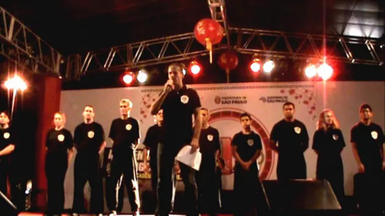

História do Wing Chun no Brasil
Por Thomas Pinheiro
Quero repassar um pouco do que experienciei sobre Wing Chun no Brasil, pois para mim foi como resolver um quebra cabeças, montando a partir do dia que comecei a treinar até se passarem anos de treino, após conhecer várias pessoas envolvidas, treinando ou apenas em um contato pessoal. Relatarei como uma memória, não me atendo muito a nomes até por uma questão de que minha intenção é contar o que vivi e tentar não prejudicar outros, porém acredito que cada um sabe o que está ensinando, se é honesto ou não; e apesar de aproveitadores estarem por aí aos montes, cada um tem a livre escolha para procurar um mestre, seu professor, sendo que também não é todo mestre que aceita alguém para ensina-lo.
Iniciei meu primeiro contato com o wing chun através de treino em 1982, mais exatamente no começo do mês de julho, mais por influência de meu irmão, que também queria treinar wing chun. Naquele ano acabei indo treinar em uma academia de um brasileiro que se localizava na Vila Clementino onde permaneci por um ano e meio, praticando até o chamado nível chum kiu. Havia buscado esta academia pelo fato de ser o único local em São Paulo naquela época a mencionar o estilo wing chun para público.
Porém muito desconfiado, fui assistir a treinos de kung fu em outra academia, que se localizava na rua da Consolação, mas era muito estranho o que falavam sobre aprender wing chun, diziam que para se aprender o wing chun seria necessário treinar inicialmente vários outros estilos de kung fu para então num determinado nível chegar ao treino do wing chun, mas também não se falava qual era o conteúdo, tudo muito misterioso. Um ex professor e amigo da academia na Vila Clementino me contara de um amigo que treinava Wing Chun com um mestre chinês chamado Thomas Lo. Entrei em contato, porém tive a noticia de que tal mestre não ensinava mais. O tempo passava, então recordando um certificado de meu primeiro professor de wing chun na vila Clementino, que ficava exposto ao lado de uma carta de Linda Lee na parede da recepção da academia, e que mencionava o nome de um chinês, chamado mestre chinês E.
Em busca de ter aulas de wing chun eu e meu irmão fomos a procura do tal mestre E., que dava aula de garra de águia em um prédio no bairro da Liberdade em que funcionava um centro cultural chinês. Assisti a aula e apenas o que vira além de movimentos de outro estilo de kung fu fora muito pouco de wing chun, uma prática de dan chi sau sem muito compromisso. Pessoalmente ele nos indicou a outra pessoa, seu irmão que dava aula de hung gar kung fu no bairro de Santo Amaro. Já estávamos em 1984, final do ano; encontramos então com o tal mestre indicado em uma academia em cidade dutra em são paulo, depois de muita conversa ele se interessou em dar aulas de wing chun para meu irmão e para mim. Começamos a treinar com ele em sua academia em Santo Amaro, próxima ao largo 13, todos os sábados depois que a academia fechava seus treinos normais de outro estilo de kung fu, hung gar.
O mestre nos contou que estava no Brasil desde 1979, que treinara um pouco na academia do mestre Yip Man mas que teria tido mais tempo de treino com aulas particulares com o falecido mestre Koo Sang. Nesta época só treinávamos em três pessoas, sendo que a terceira pessoa vinha do Rio de Janeiro apenas uma vez por mês. Treinamos por seis meses, onde nesse tempo aprendi até a forma do chum kiu, chi sau, algumas aplicações e andadas de wing chun.
Chegamos a treinar inclusive com o mestre em um pequeno barracão, no jardim da casa de minha família. Montamos uma pequena academia com saco de pancada, de parede, mook jong e área de treino ao ar livre. No ano de 1985 meu irmão incentivado pelo mestre chinês e com uma carta de recomendação iria treinar em Hong Kong, porém antes acabaria viajando para fazer intercambio de inglês e treinar wing chun no Arizona. Após seis meses depois; retornou dos EUA. Nosso mestre de wing chun começou a querer treinar mais com ele.
Apareceram mais duas pessoas para treinar também, um carioca e outro, um japonês que naquela época dava aulas de jeet kune do (não me perguntem como, pois eu também não sei como alguém que nunca teve aula com o Bruce Lee ou com algum aluno do Bruce Lee poderia dar aulas de Jeet Kune Do aqui no Brasil desde 1982). No ano de 1986 parei de treinar com o mestre chinês, em virtude de treinar com meu irmão que aprendera bem mais em seis meses fora com o mestre Fong. Montamos então uma turma de treino em casa, éramos quatro pessoas ao todo.
Um dos alunos do mestre chinês e que era do Rio de Janeiro acabou nos procurando diretamente para treinar, e vinha esporadicamente do Rio de Janeiro. O japonês também nos procurou naquela época, me lembro que fora em casa pedir para ter aula de wing chun com meu irmão, mas não fora aceito. Ainda no segundo semestre de 1986 continuei treinando com os dois do grupo, um chamava-se Emilio e o outro Luis. Meu irmão voltara a se estabelecer nos E.U.A em 1987, e a cada seis meses retornava ao Brasil e todo tempo que podia eu treinava e procurava guardar as técnicas.
De dezembro a final de janeiro em visita, permaneci um mês treinando na academia do mestre Fong nos E.U.A. que era o mestre de meu irmão. Ao voltar desta viagem, que fora decisiva para mim, pois motivou-me a querer me desenvolver mais ainda. Com o pequeno grupo em casa eu treinava quatro vezes por semana com treinos de três horas e meia. Como eu morava ao lado da avenida Faria Lima e descobrira que o mestre que eu procurara em 1984, Thomas Lo, estaria dando aulas em uma academia a dois quarteirões de casa. Lá fui eu numa noite me apresentar e conhecê-lo.
Após eu conversar e ser um tanto abusado, mestre Lo pediu-me para demonstrar a forma siu lim tau, fazer socos, praticar um pouco de dan chi sau, e em seguida fiz seung chi sau com ataques com seu aluno mais antigo, que estava presente naquela ocasião. Percebi que mestre Lo era diferenciado mas que se eu tivesse que ter aulas, seriam com seus instrutores, pois mestre Lo supervisionava, e as aulas mais restritas eram apenas para seus dois alunos mais velhos. Naquele momento eu procurava aulas com treinos longos e queria aprendizado direto com ele.
A partir de 1988 eu mudei meu espaço de treino para a rua Maria Carolina, ainda nos jardins, permanecendo até 1995. O já citado japonês em 1988 se apresentava como mestre de Wing Chun, referendado pelo meu antigo mestre chinês de Wing Chun. Um adendo curioso na história, quando conheci mestre Lo, ele havia me contado que um japonês (o mesmo) havia lhe procurado em 1985 para aprender wing chun e que em troca lançaria um livro de wing chun do mestre Lo, porém mestre Lo também não o aceitou. Entre os anos de 1991 a 1993 aumentei minha carga de treino de Wing Chun com meu irmão e com uma professora da academia do mestre Fong (aluna considerada numero 2) pois ambos estavam residindo no Brasil.
Cheguei a aprender o conteúdo integral do mestre Fong, incluindo armas e formas tradicionais do mestre Ho Kam Ming. O que acontecia em termos de Wing Chun no Brasil naquele momento eram professores filiando-se através de seminários a outros mestres de wing chun no exterior. Meu antigo mestre chinês também fora treinar com outro mestre no começo de 1990, nos E.U.A. . O tal japonês também mudaria de família de wing chun para outra. Já no começo de 1994 por divergências, eu não estava mais treinando com meu irmão.
Em 1995 com meu novo espaço localizado em pinheiros, reencontrei com mestre Lo, convidando-o a estabelecer um consultório de acupuntura e dar aulas de tai chi chuan em minha academia, o que acabou acontecendo em janeiro de 1996. Em 1996 com mestre Lo aplicando acupuntura e dando aulas de tai chi chuan e chi kung em minha academia em Pinheiros, não tardei a conversar sobre wing chun. Recebendo ideias novas sobre técnicas e experimentando-as, cheguei a conclusão de iniciar meus treinos com mestre Lo.
Oficializado discípulo apenas no começo de 1997, treinei pessoalmente e fortemente, dedicando até 6 horas de treinos diários. Nesse momento de treino, muitas pessoas apareceram na academia, vindos do exterior (europeus, chineses ou brasileiros mesmo, alguns de escola de wing chun diferentes, incluindo praticantes ditos professores muito duvidosos; na verdade, charlatães de plantão, individuo que decora forma em videos, conta histórias mirabolantes de treino com alunos de Yip Man, que não podem se revelar em publico, se utilizam de mídia para tentar dar credibilidade, misturam religiosidade ao treino, inventam linhas de wing chun que não existem ou não tem respaldo histórico algum de treino e por aí vai... ).
Ao treinar com mestre Lo, ganhei como grande companheiro de treino Francisco Dias, um antigo aluno da década de setenta de mestre Lo; companheiro de treino (por dez anos) que também me auxiliou muito, ensinando e passando suas experiências. Quando do início desta matéria falei que saber sobre o Wing Chun no Brasil foi montar um quebra cabeça, as peças vieram a se encaixar após iniciar o treinamento com mestre Lo. Vindo para o Brasil em 1970, mestre Lo ao estar em São Paulo em 1974 andando pela rua Augusta acompanhado de um amigo, mestre em Shaolin kung fu, se depararam com uma academia de kung fu, curiosos, entraram para conhecer. O mestre da academia, um brasileiro, ensinava um estilo que nem mestre Lo ou seu amigo conheciam.
O mestre brasileiro interessado ao ver os dois orientais pediu para que demonstrassem algo, e ao descobrir que eram expecialistas em seus respectivos estilos de kung fu, pediu para que o ensinasse wing chun e shaolin. Mestre Lo não se interessou em ensinar e seu amigo ensinaria apenas uma forma básica e alguns movimentos de shaolin.
Outro chinês (o já mencionado Mestre E.) que era amigo de mestre Lo, acabou pedindo para aprender as formas do wing chun ( siu lim tao, chum kiu e bue gee), decorou as formas em três meses e repassou-as ao tal mestre brasileiro, curiosamente; este mais tarde seria o mestre da já mencionada academia nos anos 80 na vila Clementino.
Assim pude elucidar e compreender o quebra cabeças do wing chun surgindo no Brasil. De tudo o que passei até hoje, é que apesar de realizado e ainda sempre poder evoluir, sei que tudo pelo que passei, fosse de treino correto ou errado, pôde através de treino árduo e empenho, amadurecer e ter consciência do conhecimento do wing chun kung fu. Ter a convivência com um grande mestre para mim é motivo de orgulho, poder ter acesso e aprender uma cultura de tantos anos, vencendo barreiras e podendo contar a vocês uma história que vivi e aliás, que ainda vivo, mais forte do que quando iniciei em 1982.